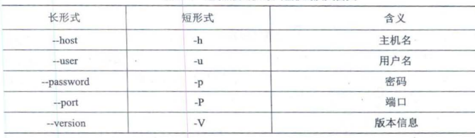
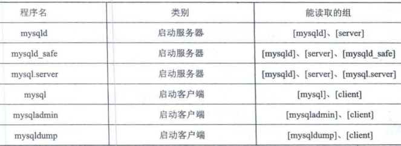

双指针技巧可分为两类，一类是「快慢指针」，一类是「左右指针」。前者解决主要解决链表中的问题，比如典型的判定链表中是否包含环；后者主要解决数组（或者字符串）中的问题，比如二分查找。
快慢指针
判定链表中是否含有环
经典解法就是用两个指针，一个跑得快，一个跑得慢。如果不含有环，跑得快的那个指针最终会遇到null，说明链表不含环；如果含有环，快指针最终会超慢指针一圈，和慢指针相遇，说明链表含有环。
boolean hasCycle(ListNode head) {
ListNode fast, slow;
fast = slow = head;
while (fast != null && fast.next != null) {
fast = fast.next.next;
slow = slow.next;
if (fast == slow) return true;
}
return false;
}
bool hasCycle(ListNode* head) {
ListNode* fast = head;
ListNode* slow = head;
while (fast != nullptr && fast->next != nullptr) {
fast = fast->next->next;
slow = slow->next;
if (fast == slow) // 有环
return true;
}
return false;
}子序列问题相对于子串，子数组会难一些。字串要求是连续的，而子序列不要求。字串问题一般使用双指针，滑动窗口来求解，而子序列一般需要用动态规划求解。
子序列问题一般就是求一个最长子序列，最短子序列就是一个字符没啥可求的。一个串的子序列数量是指数级的，而动态规划往往可以压缩到时间复杂度为O(N^2)
labuladong总结的子序列问题的两种思路。
一维dp数组
这种常见的是求最长递增子序列
int n = array.length;
int[] dp = new int[n];
for (int i = 1; i < n; i++) {
for (int j = 0; j < i; j++) {
dp[i] = 最值(dp[i], dp[j] + ...);
}
}dp数组的定义是, 在子数组array[0..i]中，以array[i]结尾的目标子序列(最长递增子序列)的长度为dp[i]。
- 最长递增子序列
算法时间复杂度O(N^2)vector<int> dp(n, 1); for (int i = 1; i < n; i++) { for (int j = 0; j < i; j++){ if (s[i] > s[i-1]) dp[i] = max(dp[i], dp[j] + 1); } }
这种思路来自于归纳法。
二维dp数组
这种思路用的多一些。
int n = arr.length;
int[][] dp = new dp[n][n];
for (int i = 0; i < n; i++) {
for (int j = 1; j < n; j++) {
if (arr[i] == arr[j])
dp[i][j] = dp[i][j] + ...
else
dp[i][j] = 最值(...)
}
}常见bash shell命令
目录
# 切换目录
cd des
# 当前工作目录
pwd
# 显示
ls
ls -a # 显示隐藏文件
ls -l # 显示长列表
ls -l my* # *可匹配0或多个字符
ls -l my_?s # ?匹配单个字符
# 创建目录
mkdir
# 删除目录
rm -r
rm -rf文件
# 创建文件, touch命令
touch test_one
# 复制文件
cp source destination
cp -R # 递归复制整个目录内容
# 符号链接
# 一个实际存在的文件，指向存放在虚拟目录结构的另一个文件
ln -s 文件 链接文件
ln -s gcc-5 gcc
# 删除文件
rm
# 查看文件类型
file my_file
# 查看文件内容
cat my_file
cat -n 加上行号
# 查看开头的部分文件
head -n log_file # 前n行文本监测
- 监测进程ps
# 监测进程 ps ps -e 所有进程 ps -f 显示完整格式的信息 ps -l 显示长列表 ps -j 显示任务信息
如上, UID表示启动进程的用户, PID表示进程ID, PPID父进程的进程号, C CPU利用率, STIME 进程启动时系统时间, TIME 运行进程需要的累计CPU时间, CMD启动的程序名称。
- 实时检测进程 top

- 结束进程
kill <PID>
kill发送一个信号结束进程, 但只能用进程的PID
killall支持进程名结束进程- 挂载磁盘
将磁盘并入到虚拟文件系统中, 称之为挂载
# 输出当前挂在的设备列表
mount
mount -t type device directory
type为文件系统类型
mount -t vfat /dev/sdb1 /media/disk
umount 卸载设备(挂载点)
umount /home/rich/mnt- 监测磁盘空间
# 查看已挂载磁盘的使用情况
df
df -h 用户易读形式展示
# 查看特定目录的磁盘使用情况
du -h 用户易读模式
du -c 总文件大小
du -hc- 搜索数据 grep
grep 可以从文件中查找包含匹配模式的行
grep [options] pattern [file]
grep 可以使用正则表达式
grep -c # 显示多少行具有匹配的模式linux网络常用命令
/etc/hosts
hosts —— the static table lookup for host name（主机名查询静态表）。
hosts文件是Linux系统上一个负责ip地址与域名快速解析的文件，以ascii格式保存在/etc/目录下。hosts文件包含了ip地址与主机名之间的映射，还包括主机的别名。在没有域名解析服务器的情况下，系统上的所有网络程序都通过查询该文件来解析对应于某个主机名的ip地址，否则就需要使用dns服务程序来解决。通过可以将常用的域名和ip地址映射加入到hosts文件中，实现快速方便的访问。
优先级 ： dns缓存 > hosts > dns服务
ip地址 主机名/域名 （主机别名）
192.30.255.112 github.com git
185.31.16.184 github.global.ssl.fastly.net ping
ping属于一个通信协议，是TCP/IP协议的一部分。利用“ping”命令可以检查网络是否通畅或者网络连接速度，很好地分析和判定网络故障。
Ping发送一个ICMP（Internet Control Messages Protocol），即因特网信报控制协议；接收端回声消息给目的地并报告是否收到所希望的ICMPecho （ICMP回声应答）。它的原理是：利用网络上机器IP地址的唯一性，给目标IP地址发送一个数据包，通过对方回复的数据包来确定两台网络机器是否连接相通，时延是多少。ping没有通过运输层的TCP或UDP。
TCPing是基于TCP协议的一种Ping命令，用来测试数据包能否通过TCP协议到到达目标主机（其实就是抄上面的描述）。他又一大特点，就是可以监听某个端口的状态，在禁Ping的时候，也可以检测网络连通率。
mysql的日常使用包括
- 启动MYSQL服务器程序
- 启动MYSQL客户端程序,连接到服务器程序
- 客户端中输入命令语句, 并将其作为请求发送到服务器程序、服务器执行将结果返回到客户端。
命令
mysql基础
mysqld 可执行文件表示MYSQL服务器启动程序
mysql.server是一个启动脚本，间接调用mysqld_saft.
mysql.server start # 启动服务器程序
mysql.server stop # 关闭正在运行的服务器程序mysql服务器默认监听3306端口
启动mysqL服务器程序后, 可以启动客户端来连接。通过mysql可执行文件可以与服务器交互。
mysql -h host -u user -p password
mysql -hlocalhost -uroot -p123456- 命令的长形式

启动
变量